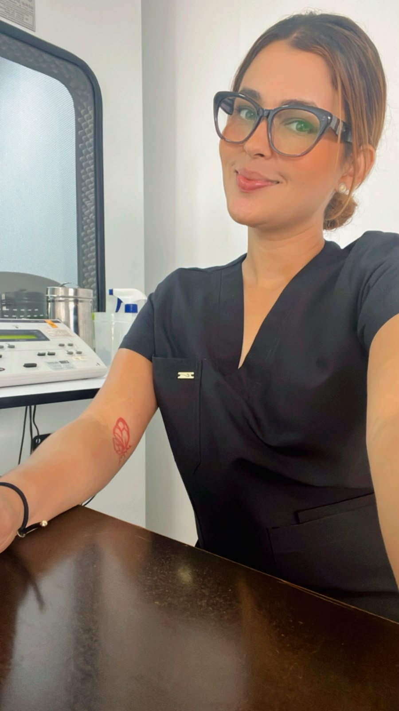
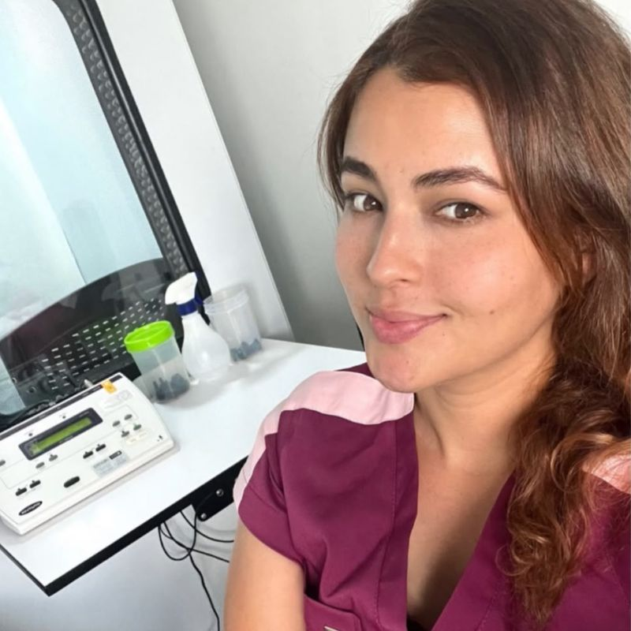
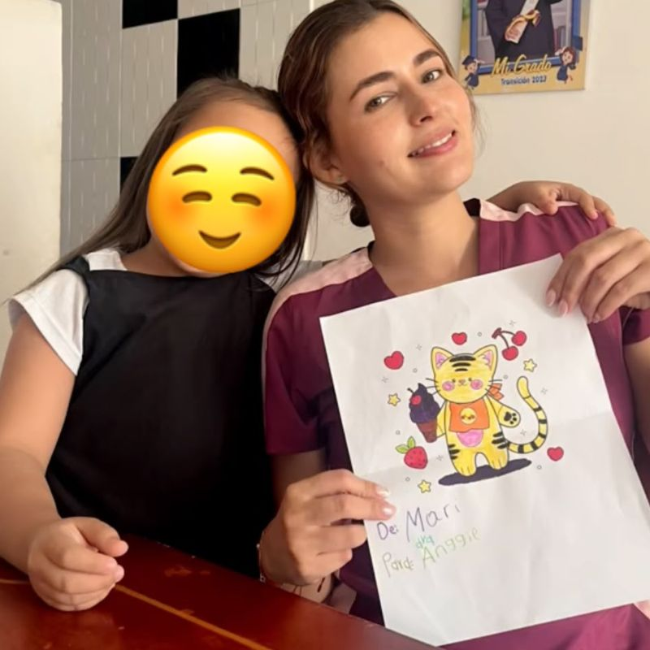
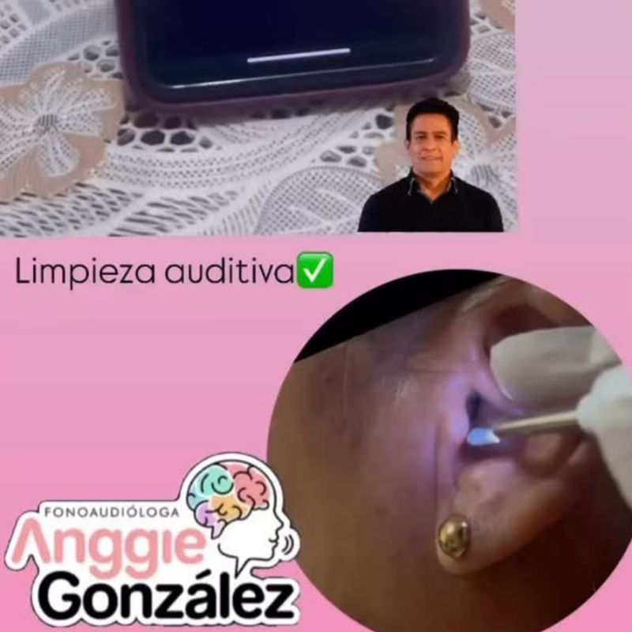
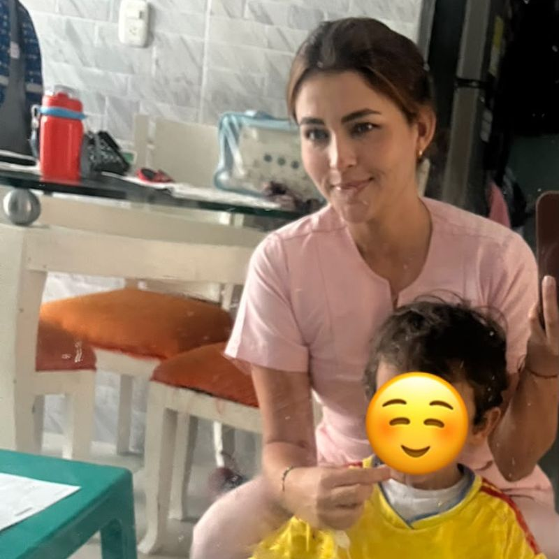
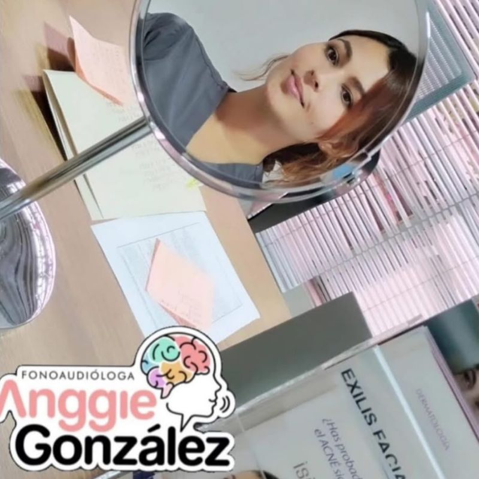

Atención profesional en terapias de lenguaje, habla, voz y audición.
📍 Piedecuesta, Santander y área metropolitana
Agendar cita por WhatsApp
Soy la Dra. Anggie Katherine González Beltrán, fonoaudióloga dedicada a brindar atención personalizada en procesos de comunicación, lenguaje, habla, voz y audición.
Mi objetivo es acompañar a cada paciente mediante terapias profesionales enfocadas en fortalecer sus habilidades comunicativas y mejorar su calidad de vida.
Agendar valoraciónAtención profesional en evaluación, diagnóstico e intervención fonoaudiológica para niños, jóvenes, adultos y adulto mayor.
Evaluación e intervención de dificultades en la pronunciación de los sonidos del habla, como dislalias, trastornos fonológicos y apraxia del habla.
Valoración y terapia de alteraciones en la comprensión y expresión del lenguaje, tanto en niños como en adultos.
Prevención, evaluación y tratamiento de alteraciones de la voz, disfonías, fatiga vocal y rehabilitación vocal.
Detección, evaluación y orientación en dificultades auditivas, entrenamiento auditivo y acompañamiento en el uso de ayudas auditivas.
Evaluación y rehabilitación de trastornos para tragar (disfagia) en población infantil, adulta y adulto mayor.
Fortalecimiento de habilidades comunicativas, incluyendo comunicación aumentativa y alternativa para personas con necesidades complejas de comunicación.
Evaluación y terapia de funciones como respiración, succión, masticación, deglución y postura de los órganos orofaciales.
Intervención en trastornos de la fluidez del habla, como tartamudez y farfulleo.
Espacios diseñados para acompañar cada proceso de comunicación, lenguaje, voz y audición.





Solicita tu valoración fonoaudiológica y recibe atención profesional.
Lunes a Viernes:
8:00 a.m. – 6:00 p.m.
Sábados:
8:00 a.m. – 12:00 m.
Domingos y festivos:
Atención con cita previa.
📍 Piedecuesta, Santander y área metropolitana
📱 WhatsApp: 3145551004
💬 Agendar cita por WhatsApp